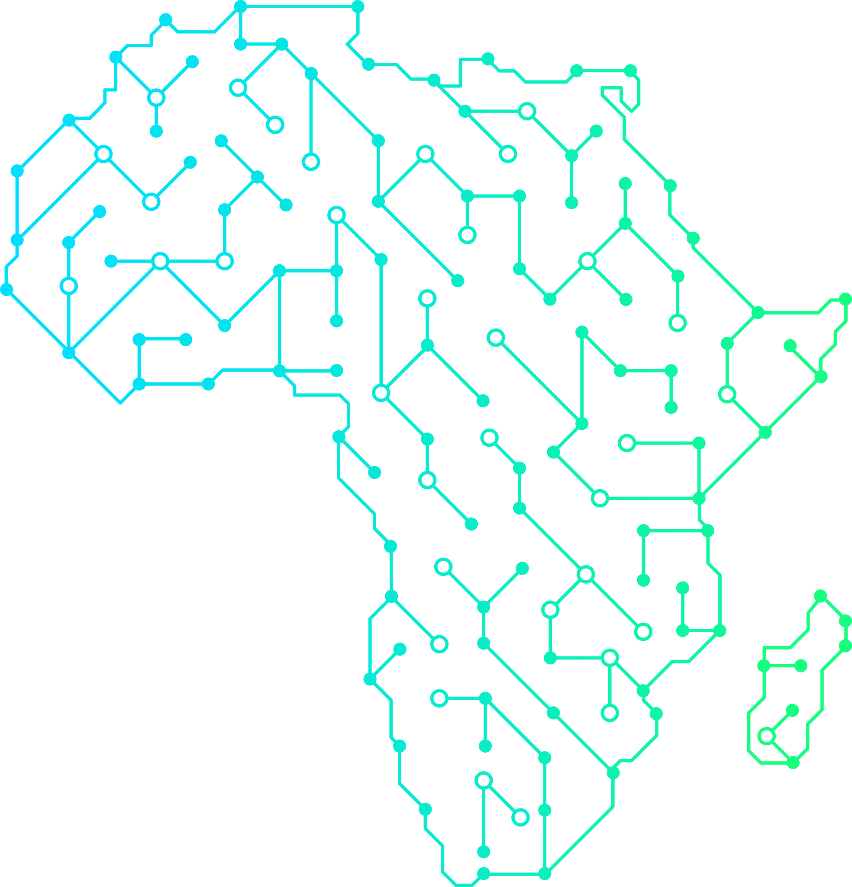
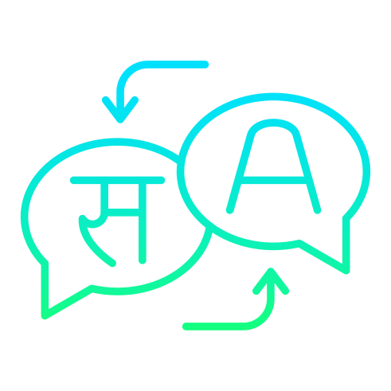

AI & data science / Kampala, Uganda
Intelligence built for real life.
Boda AI Factory brings artificial intelligence and data science closer to the everyday challenges of African organizations, communities, and public systems.

LOCAL DATA / PRACTICAL MODELS / SHARED IMPACTWhy this work matters
AI is only useful when it understands the context.
We help African entities unlock the potential of localized research, data, and models without losing sight of the people and systems they serve.
Research & work
A practical AI lab for the sectors shaping Africa.
Explore the areas where Boda AI currently applies computer vision, speech and language, and data science.
Agriculture & livestock
AI-powered tools for the agricultural value chain, including mobile technology for farmers and extension workers.
View area →
Speech & text
Speech and text recognition and translation for Africa's diverse linguistic landscape.
View area →Healthcare delivery
AI-powered approaches to predict disease outbreaks, optimize interventions, and streamline care.
View area →Infrastructure
AI-driven image analysis to improve maintenance, safety compliance, and infrastructure insight.
View area →
Democratizing finance
Intelligent tools that support informed financial decisions for people and institutions.
View area →Business operations
Decision-making tools that help African businesses streamline operations and allocate resources.
View area →How we work
From local questions to useful systems.
- 01Understand the contextWe begin with the people, constraints, and decisions that shape the problem.
- 02Build with the right dataWe explore localized data and models suited to the environment where they will be used.
- 03Deploy and learnWe translate research into practical tools, then improve them through use.